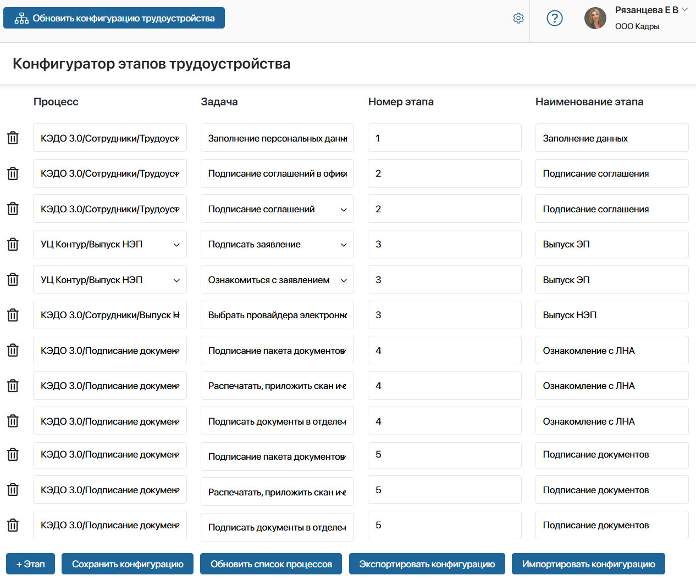
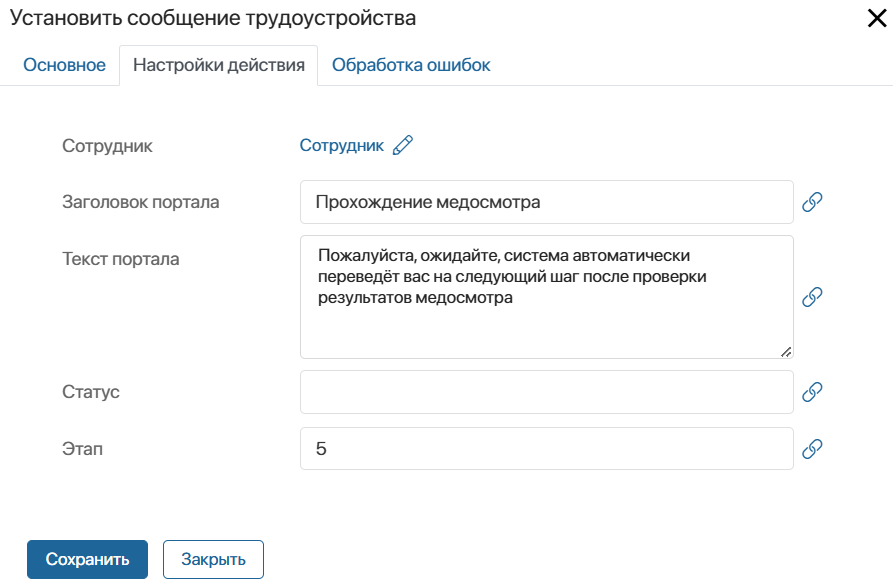
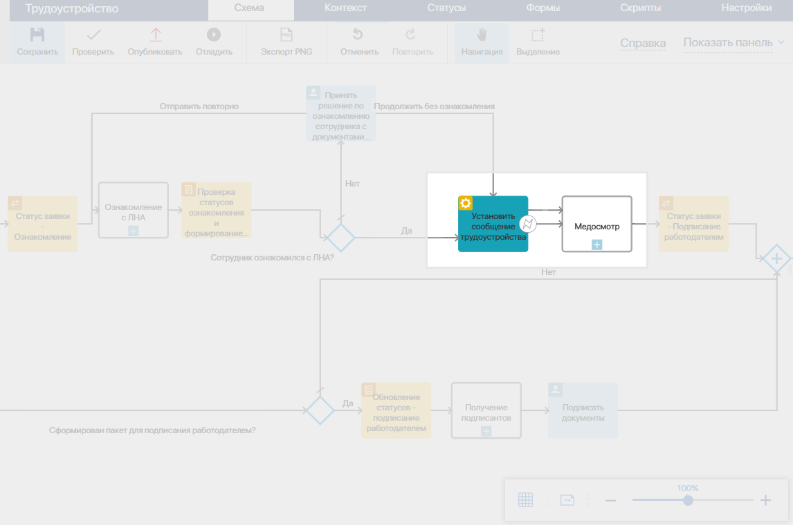
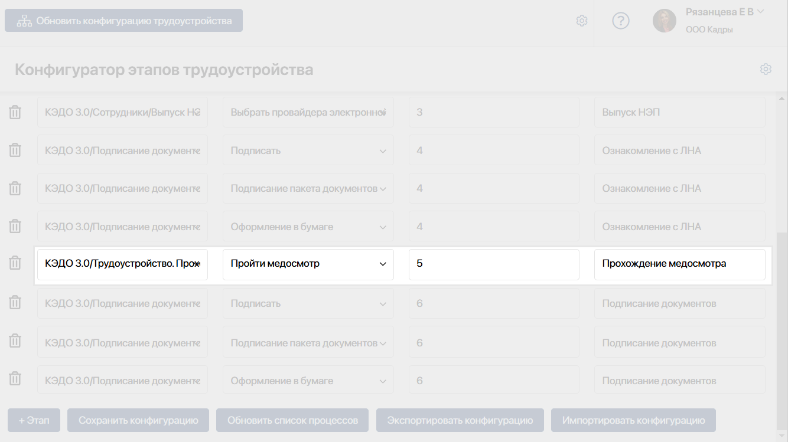

При трудоустройстве сотрудник проходит определённые этапы через Портал КЭДО: заполнение данных, подписание соглашения, выпуск НЭП и т. д.
Чтобы пройти этап, он выполняет поступившую задачу и ожидает действий от специалиста отдела кадров. Смену этапов сотрудник отслеживает на боковой панели страницы портала. Подробнее преднастроенный маршрут приёма для сотрудника описан в статье «Зарегистрироваться на портале КЭДО и трудоустроиться в организацию».
Вы можете адаптировать маршрут трудоустройства на портале КЭДО под потребности компании. Например, можно добавить дополнительный этап для сотрудника: прохождение медосмотра и предоставление обходного листа.
Механизм настройки маршрута трудоустройства
Рассмотрим, каким образом в ELMA365 задаются этапы трудоустройства, и настраивается их отображение на портале КЭДО:
- В разделе КЭДО 3.0 создан бизнес-процесс Трудоустройство. На его схеме каждый этап трудоустройства представляет собой отдельный подпроцесс. При его запуске пользователям назначаются определённые задачи.
- Для определения последовательности задач на портале КЭДО перед запуском каждого подпроцесса на схему добавлен специальный графический элемент Установить сообщение трудоустройства. Блок сопоставляет действия, настроенные в процессе Трудоустройство, с этапом на портале КЭДО. В нём задаётся номер этапа и сообщение для пользователя, которое он увидит на странице портала в режиме ожидания действий от специалиста отдела кадров.
- Чтобы схема процесса Трудоустройство совпадала с маршрутом сотрудника на портале КЭДО, настраивается конфигурация трудоустройства. Для этого предусмотрен Конфигуратор этапов — инструмент, который объединяет задачи из разных подпроцессов, задаёт последовательность их выполнения, и определяет названия этапов на боковой странице портала КЭДО.
Таким образом, чтобы изменить действия сотрудника при приёме на портале КЭДО, нужно:
- отредактировать схему процесса Трудоустройство;
- по изменённой схеме задать новый маршрут трудоустройства на странице Конфигуратор этапов.
Как устроен «Конфигуратор этапов»
Конфигуратор этапов — это страница в разделе КЭДО 3.0. Она показывает, как на портале КЭДО отображается маршрут приёма в организацию, настроенный в бизнес-процессе Трудоустройство. Здесь в таблице перечислены задачи трудоустраиваемого сотрудника и этапы, которые он проходит.
Если процесс трудоустройства отредактировали, конфигуратор позволяет быстро внести соответствующие изменения в маршрут на портале КЭДО. Вы сможете управлять последовательностью задач для пользователя и изменять наименования этапов.
Конфигуратор заполняется после первичной настройки решений согласно схеме процесса Трудоустройство, предусмотренного по умолчанию. В каждой строке таблицы вы увидите:
- подпроцесс, экземпляр которого запускается на определённом этапе;
- задачу подпроцесса, которая назначается на сотрудника;
- порядковый номер этапа на портале КЭДО;
- наименование этапа, которое отображается для сотрудника на боковой панели страницы портала КЭДО.

Для каждого этапа в конфигуратор добавлены все возможные задачи из подпроцесса, которые может получить сотрудник на портале КЭДО. Записи в таблице отмечены одним номером:
- Если пользователь выполняет несколько последовательных задач в рамках одного этапа.
Например, если в компании настроены разные способы подтверждения сертификата НЭП, на этапе его выпуска сотрудник в отдельных задачах: выбирает удобный ему способ вручную и подтверждает получение сертификата.
- Если процесс предполагает разные задачи в зависимости от выполнения условий.
Например, при создании карточки сотрудника специалист отдела кадров определяет, как в компанию передаётся трудовой договор: дистанционно или лично в офисе. В зависимости от этого сотрудник на портале КЭДО получает определённую задачу.
Кнопки управления конфигуратором этапов
Если вы отредактировали преднастроенный бизнес-процесс Трудоустройство, вам нужно изменить таблицу в Конфигураторе этапов. Только после этого на портале КЭДО обновится маршрут приёма в организацию. Сотрудники увидят добавленные задачи и изменённую последовательность этапов.
Для этого на странице Конфигуратор этапов предусмотрены кнопки управления:
- Обновить конфигурацию трудоустройства — восстановление конфигурации по умолчанию;
- + Этап — добавление новой задачи в таблицу и настройка этапа трудоустройства;
- Сохранить конфигурацию — сохранение текущей схемы в виде данных формата .json в элементе служебного приложения Конфигурации страницы. Вы сможете обращаться к конфигурации позднее, например, чтобы импортировать схему в другую компанию;
- Обновить список процессов — поиск процессов, доступных для выбора в конфигураторе. Используйте кнопку, например, если вы создали новый процесс и хотите добавить задачу из него в конфигуратор;
- Экспортировать конфигурацию — загрузка на компьютер текущей схемы трудоустройства в формате .json, например, для импорта в другую компанию;
- Импортировать конфигурацию — обновление текущей схемы трудоустройства из файла формата .json.
Пример настройки процесса трудоустройства
Рассмотрим, как изменить процесс трудоустройства на примере. Добавим новый этап для сотрудников — прохождение медосмотра и предоставление обходного листа.
Для этого создадим пользовательский процесс, в котором будет выполняться новый этап. Добавим его в процесс Трудоустройство и отредактируем схему в конфигураторе этапов.
Шаг 1. Создать пользовательский процесс
- Добавьте пользовательский процесс на уровне любого раздела системы, например, процесс Трудоустройство. Прохождение медосмотра.
- Настройте схему процесса согласно процедурам, принятым в вашей компании. В нашем процессе будут две зоны ответственности со своими задачами:
- трудоустраиваемый сотрудник получит задачу Пройти медосмотр и загрузит пройденный обходной лист;
- специалист отдела кадров выполнит задачу Проверить обходной лист.
- Сохраните и опубликуйте пользовательский процесс.
Шаг 2. Внести изменения в процесс «Трудоустройство»
Следующий шаг настройки — внедрить запуск пользовательского процесса в основной процесс Трудоустройство.
- Чтобы получить доступ к процессу Трудоустройство, разблокируйте решение КЭДО 3.0.
- Оцените, когда в текущей конфигурации трудоустройства добавится новый этап, и будет запущен пользовательский процесс.
Откройте страницу Конфигуратор этапов и по таблице определите номер этапа. Это нужно, чтобы указать последовательность этапов в настройках процесса Трудоустройство и задать корректный маршрут.
Например, ознакомление с локальными нормативными актами — это четвёртый этап. После него добавим наш пользовательский процесс прохождения медосмотра — пятым этапом. Тогда подписание трудового договора добавится в таблицу как шестой этап.
- Перейдите в раздел КЭДО 3.0 > Сотрудники, рядом с названием приложения нажмите значок шестерёнки и выберите Бизнес-процессы. Откройте схему процесса Трудоустройство.
- На схеме найдите этап трудоустройства, после которого вы хотите добавить пользовательский процесс. В нашем примере — это блок запуска подпроцесса Ознакомление с ЛНА.
- На правой панели дизайнера бизнес-процессов найдите блок Установить сообщение трудоустройства.
Он обозначает начало нового этапа трудоустройства и сопоставляет действия в процессе с задачами сотрудника на портале КЭДО. В блоке вы задаёте номер шага на портале, а также сообщения, которые увидит пользователь после выполнения задач.
Блок можно использовать как в основном процессе Трудоустройство, так и внутри пользовательских подпроцессов. Например, если в подпроцессе сотрудник проходит несколько этапов, которые должны сменяться на портале КЭДО.
Разместите блок на схеме перед запуском пользовательского процесса и задайте его настройки:

- вкладка Основное — задайте название блока на схеме процесса. В опции Присвоить атрибуты в выберите контекст процесса;
- вкладка Настройки действия:
- Сотрудник — передайте в блок определённого пользователя. Для этого нажмите значок
 и выберите свойство Сотрудник с типом Приложение из контекста процесса. Обратите внимание, если связать поле с вложенным свойством из контекста приложения, например, Заявка на трудоустройство > Сотрудник, в пользовательском процессе возникнет ошибка;
и выберите свойство Сотрудник с типом Приложение из контекста процесса. Обратите внимание, если связать поле с вложенным свойством из контекста приложения, например, Заявка на трудоустройство > Сотрудник, в пользовательском процессе возникнет ошибка; - Заголовок портала — укажите название этапа, которое увидит сотрудник в центре страницы портала КЭДО после выполнения назначенной задачи, в режиме ожидания действий от специалиста отдела кадров;
- Текст портала — добавьте оповещение для сотрудника, которое он увидит на странице портала КЭДО после выполнения назначенной задачи, в режиме ожидания действий от специалиста отдела кадров;
- Статус — оставьте поле пустым;
- Этап — укажите, когда в новой конфигурации трудоустройства запустить пользовательский процесс, чтобы пользователь выполнил задачи на портале КЭДО. В поле указывается номер этапа, который вы определили ранее по таблице Конфигуратор этапов. Например, в нашем примере этап прохождения медосмотра добавляется пятым шагом, после ознакомления с локальными нормативными актами. В поле введём значение 5.
- Сотрудник — передайте в блок определённого пользователя. Для этого нажмите значок
На данном этапе настройки блока завершены, сохраните их.
- После Установить сообщение трудоустройства разместите на схеме задачи для пользователя. Например, в нашем примере добавим блок Запуск процесса и выберем процесс Трудоустройство. Прохождение медосмотра, созданный на шаге 1.
- Добавьте переходы между блоками на схеме процесса.
Обратите внимание, блок Установить сообщение трудоустройства является действием бизнес-процесса, настроенным в модуле. Чтобы в ходе процесса такие блоки выполнялись корректно, для них нужно обязательно создать дополнительный переход по эскалации. При этом для блока Установить сообщение трудоустройства настраивать ветку процесса для обработки ошибки в его работе не нужно.
После добавления нового этапа схема процесса Трудоустройство может выглядеть следующим образом:

- Теперь нужно скорректировать дальнейшую последовательность этапов трудоустройства на портале КЭДО.
Для этого на схеме процесса найдите блоки Установить сообщение трудоустройства, которые идут после добавленного нами этапа. Откройте настройки каждого из них, перейдите на вкладку Настройки действия и увеличьте значение в поле Этап. В нашем примере последующий этап подписания трудового договора будет отображаться на портале КЭДО под номером шесть.
- Сохраните и опубликуйте процесс Трудоустройство.
Шаг 3. Отредактировать таблицу конфигуратора этапов
Следующим шагом нужно отредактировать конфигурацию трудоустройства на портале КЭДО, чтобы она совпадала с изменённой схемой процесса Трудоустройство. Тогда сотрудники на портале смогут проходить приём по новому маршруту и видеть другую последовательность этапов.
Для этого настраивается таблица на странице Конфигуратор этапов. Например, добавим задачу из пользовательского процесса, чтобы она назначалась сотрудникам на портале. Прохождение медосмотра будет выполняться между задачами ознакомления с локальными нормативными актами и подписанием трудового договора, поэтому нужно также отредактировать последовательность этапов в таблице.
- Перейдите в раздел КЭДО 3.0 > Конфигуратор этапов.
- Внизу таблицы нажмите кнопку Обновить список процессов, чтобы пользовательские процессы стали доступны для выбора в конфигураторе.
- Поскольку пользовательский шаг нужно добавить между текущими этапами, удалите из таблицы записи Подписание документов, нажав значок корзины рядом с их названием. В дальнейшем нужно восстановить записи после добавленного этапа, чтобы соблюсти последовательность шагов на портале КЭДО.
- Для создания записи в таблице нажмите + Этап и заполните поля в столбцах:
- Процесс — раскройте выпадающий список в поле и выберите название пользовательского процесса, например, Трудоустройство. Прохождение медосмотра;
- Задача — укажите задачу для сотрудника из выбранного процесса, например, Пройти медосмотр;
- Номер этапа — задайте порядковый номер этапа, в нашем примере — 5;
- Наименование этапа — введите название, которое отобразится на боковой панели страницы портала КЭДО, например, Прохождение медосмотра.
- Добавьте записи для удалённого шага Подписание документов, восстановите настройки задач и увеличьте порядковый номер этапа.
После настроек таблица Конфигуратор этапов может выглядеть следующим образом:

- Нажмите Сохранить конфигурацию, чтобы записать изменённую схему трудоустройства в виде элемента служебного приложения Конфигурации страницы.
Теперь сотрудник будет проходить трудоустройство на портале КЭДО по новой схеме: после ознакомления с ЛНА он предоставит обходной лист медосмотра, а затем подпишет трудовой договор.